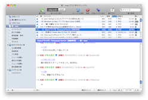
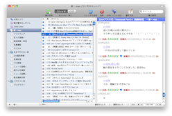

ブラウザの配置を変更する
ブラウザの配置を変更する
ブラウザ内の表示領域（ペイン）の配置を、2ペイン、3ペイン（上下に分割）、3ペイン（左右に分割）から選択することができます。
- 「表示」＞「レイアウト」サブメニューから、いずれかの項目を選択します。現在の項目には、チェックマークが付いています。

スレッド一覧とスレッドの内容表示領域の境界をドラッグしたり、ダブルクリックすることでも変更できます。
ヒント：掲示板リストの配置は左側に固定されていますが、「表示」＞「掲示板リストを隠す」と選択して、掲示板リストを隠すこともできます。詳しくは、関連項目のリンクをクリックしてください。